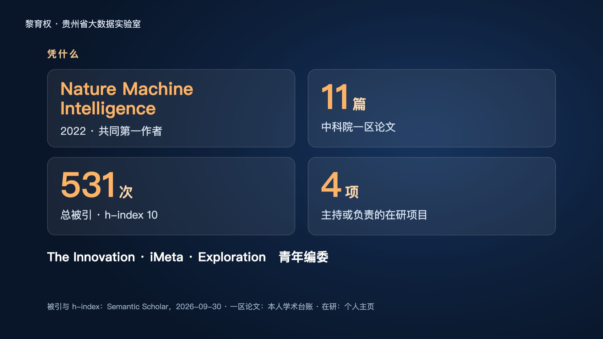
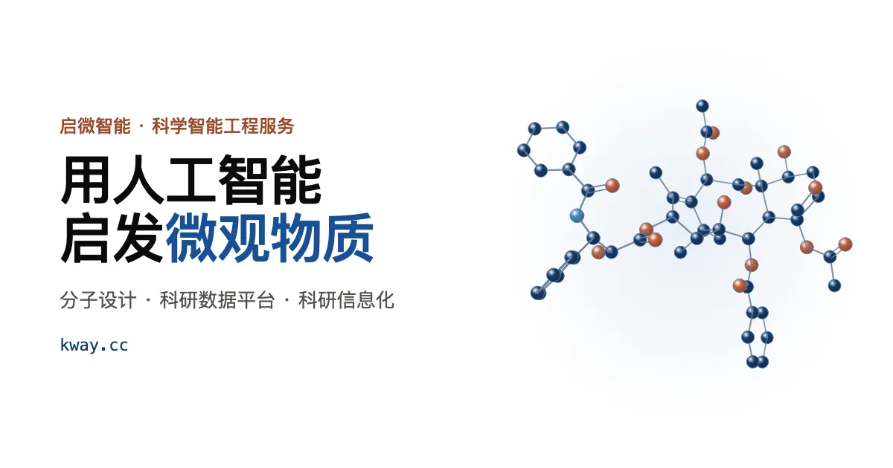

AI for Science · 学术汇报
AI 靶标发现
与分子设计
问题、方法与合作。三档时长的网页幻灯，打开即可放映，断网版与逐页 PDF 一并提供。
11中科院一区论文（篇）
531总被引（h-index 10）
4主持或负责的在研项目
3 刊The Innovation · iMeta · Exploration 青年编委
被引与 h-index：Semantic Scholar，2026-09-30；一区论文：本人学术台账；在研：个人主页。

静音片头 · 15 秒
片头为数据驱动的示意动画，配音由 AI 合成。
三档汇报
同一套事实源，按时长取舍。悬停卡片可预览关键页。
怎么放映
浏览器打开即放映；触屏左右滑动翻页。
→
翻页（空格同）
F
全屏
S
演讲者视图与计时
O
全部页总览
Esc
跳过片头 · 退出自动演示
合作企业
汇报里的「工程化落地」由这家公司承接。

首席科学家 · 不领薪酬
贵州启微智能科技有限公司
定位在科研团队与工程实现之间：读得懂论文，也能把平台部署上线并交出维护手册。
- 分子设计、科研数据平台、科研信息化
- 承接合作项目中的平台开发、部署与长期运维
- 只做计算与工程，不做湿实验